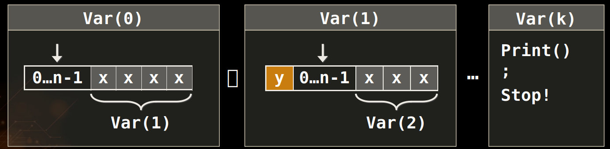

the recursive algorithms to generate variations and combinations (with and without repetition)!
Introduction
- 组合需要注意的是，元素是否能重复取，取出的元素之间顺序是否考虑
- 使用递归的方法
Generate Variations with Repetition
- for循环+递归
- Algorithm Var(index) to generate variations V(n, k)
- Put the numbers 0 … n-1 at position index
- Call Var(index + 1) to generate the rest of the array

例子
Variations without Repetition
Keep Track of Used Numbers
考虑顺序但是不重复，这就可以成为一个排列问题Permutations
例子
Generate Combinations with Repetition
In combinations, order does not matter (unlike variations). This means that the combinations (1, 2) and (2, 1) are considered the same and once we obtain one of them, the other is no longer valid.
for循环的start也就是从集合中取的数据范围缩小
例子
Generate Combinations without Repetition
Generate Combinations with Repetition差不多，只需要在递归传递集合范围的时候处理下即可
for i in range(start,size_of_set+1):
arr[index] = i
#TODO: continue generating varations starting with index+1,i+1
generate_variations(arr,size_of_set,index+1,i+1)
Variations: Iterative Algorithm
允许重复
例子